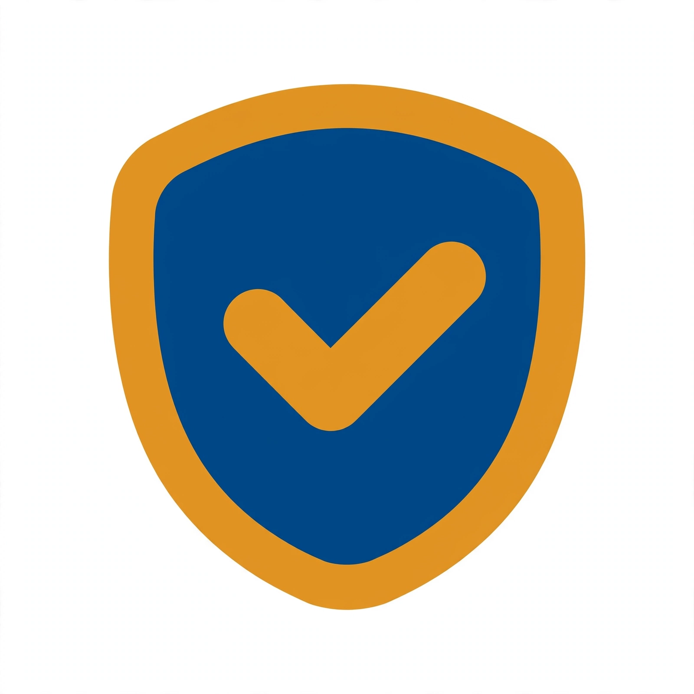

Verifica antes de creer, comprar o contestar
Prototipo no afiliado
Verifica antes de creer, comprar o contestar
Prototipo no afiliado
Not a Meta product
POTENCIADA POR MUSEHecha con la Meta Model API · Muse Spark lee, Muse Voice escucha, Muse Image ilustra

Revisión de seguridadEsto es Blindar mi cuenta: siete pasos cortos para que nadie entre a tus cuentas. Uno por uno, sin prisa.
Blindar mi cuenta en 7 minutos
Marca cada paso cuando lo termines en tu teléfono. Tu avance se guarda solo en este aparato, nadie más lo ve.
Llevas 0 de 7

Cuenta blindadaTerminaste los 7 pasos.
Insignia generada con Muse Image (Meta Model API) el 30-oct-2026. Unaffiliated prototype — not a Meta product.